CIEL, MON CERF-VOLANT !

Une pratique du sauvetage des cerfs-volants, toujours involontaire mais malheureusement lourde d'expérience, m'a appris d'abord que personne n'est à l'abri d'une cata, ensuite qu'il y a beaucoup de conseilleurs, mais pas souvent de bon conseil... J'ai aussi rodé quelques trucs à faire ou à ne pas faire, mais pas de recette miracle !
Des cas simples, d'abord, mais fréquents :
A) Vous êtes accroché avec la ligne ou le cerf-volant d'un copain.
Si c'est votre cerf-volant lui-même qui est pris dans la ligne de l'autre, évitez de tirer ou de maintenir la tension, ce qui en général le fera tourner autour et aggravera le problème.
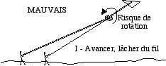
Au contraire, essayez de rendre la main et d'avancer pour que votre cerf-volant reprenne un vol libre et s'écarte de l'autre ligne, même si le croisement persiste.
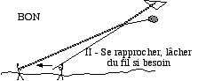
Ensuite seulement, rapprochez-vous du bas de l'autre ligne sans tirer (il peut falloir encore lâcher de la ligne). Avantage initial : dans cette position, il est impossible à une ligne de couper l'autre. Ensuite collez les 2 lignes ensemble, faites descendre le point de croisement par des frottements alternés des 2 lignes et vous verrez dans quel sens tourner autour pour vous dégager... et même si c'est la faute de l'autre, souriez-lui, il est moins fort que vous et il apprend ! Si c'est votre faute, excusez-vous, à moins que l'autre ne vous eng... auquel cas ne lui répondez pas, c'est un malotru indigne d'être cervoliste !
B) Votre cerf-volant part en rotation ou dans un piqué incontrôlable.
Sauf si vous avez déjà constaté dans le passé que cela rattrape aussitôt la situation, évitez de ramener la ligne à toute force.
D'abord, vous éviterez ainsi de couper les lignes de vos petits copains, car c'est la ligne qui ne coulisse pas qui se fait couper (surtout si quelque noeud maintient le sciage sur un point).
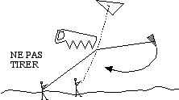
Ne pas tirer est donc politiquement correct et altruiste. Mais cela vous permettra aussi de trouver plus facilement après coup des assistants pas pris par leur sauvetage et ne faisant pas la g... pour aider ce saboteur.
Ensuite, relâcher permet souvent au cerf-volant de se récupérer tout seul : le vent relatif est moins fort, le cerf-volant se met à plat, et il n'y a plus qu'à le remettre en position académique.
Enfin, si votre cerf-volant est derrière un obstacle, il vaut mieux qu'il tombe par terre plutôt que de tirer et de l'envoyer s'ancrer en haut d'un arbre ou d'une cheminée (dans quelques cas bien francs, il est possible de relancer le cerf-volant qui dégagera sa ligne de l'arbre en remontant, mais c'est un risque à prendre) :
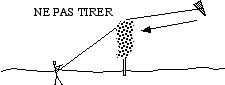
Laissez le tomber, vous le retrouverez par terre, vous décrocherez la ligne, et vous récupérerez la bête, c'est déjà bien.
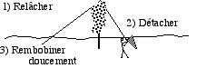
Ensuite, vous retournerez au dévidoir, vous réenroulerez la ficelle sur celui-ci, donc pas d'emmêlage. L'emmêlage est une plaie du post-sauvetage, soit qu'on ait ramené à brassées dans l'urgence, tout posé par terre dans les chardons, ou pris la ligne dans les lacets en courant ramasser, soit qu'un non-initié vous ait enroulé en une pelote indémé...lable la ligne "qui traînait" pour vous "rendre service" et vous "gagner du temps".
Réenroulez donc, mais lentement, surtout si la ligne passe dans un arbre. Ceci pour éviter que le bout ne fouette trop fort en se libérant d'un premier blocage, et ne vienne s'enrouler sur une autre branche, ce qui équivaut à un noeud à partir de 2 ou 3 tours. Et tirer sur une branche par son bout pour la casser a peu de chances de succès : elle plie sans point de concentration de la force et résistera souvent plus que la ligne ! Et si c'est un fil électrique, vous n'allez pas tirer ?!
Si vous, ou un secoureur de bonne volonté, avez quand même tiré et mis le cerf-volant dans un arbre, il doit être sous le vent de l'arbre. Essayez donc de ne plus tirer, mais de rendre du mou tout en donnant des secousses sur le fil.
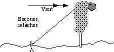
Le cerf-volant se séparera peut-être progressivement de l'arbre (insistez, ça peut prendre du temps sans que rien ne semble se passer) jusqu'à tomber ou au moins pouvoir être attrapé. Il peut falloir attendre (éventuellement quelques jours...) que le vent se renforce ou tourne. Si ça marche, on est ramené au cas précédent.
C) Votre ligne est coupée et le cerf-volant part vivre sa vie.
Cas plus stressant ! S'il part loin, restez d'abord calmement sur place (profitez-en pour rembobiner la ligne qui vous reste, ça vous évitera de décapiter un motard ou de retrouver une perruque au retour, et ça vous permettra de l'emmener avec vous, ça peut être utile). Mais surtout, repérez du mieux possible la trajectoire et le point de chute du cerf-volant : prenez un alignement (= 2 points : un où vous êtes, et un dans la direction du cerf-volant) que vous serez sûr de voir depuis la zone de recherche : bâtiments, arbres élevés, cheminées, pylônes de ligne à haute tension (quoi, c'est pas possible, vous ne voliez pas là ?)...
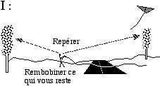
Ensuite, si vous ne voyez pas directement le cerf-volant, prenez de suite une voiture, un ou deux copains, votre kakou le plus fiable et de la ficelle (voir plus bas) :

C'est toujours plus loin que l'on ne croit, et pas tout à fait où on pensait et il faudra explorer toutes les rues ou les sentiers de la forêt. Si vous partez d'abord à pied et que vous ne trouvez rien, vous aurez bien perdu une demi-heure (et vous serez déjà fatigué...).
Dans tous les cas, cherchez le cerf-volant mais aussi sa ligne s'il en a emporté un bon bout.
D) Votre cerf-volant vole toujours, mais la ligne est prise
Un autre cas, mais qui peut ne pas exclure les précédents : la ligne est prise dans quelque chose : un arbre, une cheminée, une antenne de télé, un chien féroce... Ou encore, votre cerf-volant est posé sur un arbre, un toit, dans un jardin inaccessible (à cause du chien évidemment).
Deux cas sont possibles :
D1) Ligne accrochée mais tenue en main :
C'est un gros avantage, essayez de tirer un peu et de secouer, les lignes sont plus solides qu'on ne pense en général. Mais ne gâchez pas cet avantage en tirant comme un sourd jusqu'à casser la ficelle (qui se râpe vite sur une cheminée ou un bout de ferraille).
Vous pouvez essayer de récupérer la ligne au delà de l'obstacle comme décrit ci-dessous en D2.
Mais vous pouvez aussi, à l'aide d'un autre cerf-volant pratiquer une manoeuvre moins destructrice : d'abord, montez ce cerf-volant assez haut pour qu'il soit assez stable et bien venté. Ensuite, attachez un fil pendant à la ligne de ce sauveteur, et au bout de ce fil un mousqueton qui coulissera sur votre ligne (comme dans le 2 plus bas, prévoyez la longueur du fil pour pouvoir récupérer le cerf-volant sauveteur quoi qu'il arrive). Amenez le mousqueton près du point de blocage et agissez au mieux en vous déplaçant latéralement, en tirant vers le bas, en secouant, etc.
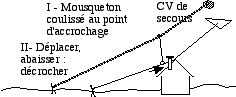
S'il faut exercer une force (par exemple cerf-volant posé dans un arbre ou sur un toit) choisissez d'abord un cerf-volant sauveteur qui tractionne fort. Ensuite supprimez le mousqueton et attachez au fil pendant, dont une bonne longueur reste toujours nécessaire par sécurité, votre ligne sans coulissement : la traction avec coulissement diviserait en effet par deux la force qui s'exercerait sur votre cerf-volant (principe du moufle, inversé).
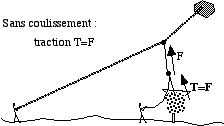
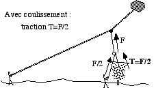
Le coulissement n'est utile que dans le cas où on a besoin de rapprocher le point d'action du point de blocage. Quand vous attachez, prévoyez seulement assez de longueur de ligne pour ne pas être obligé de la lâcher, rallongez-la au besoin avec une deuxième.
Dans toutes ces manoeuvres, l'utilisation de talkies-walkies (ou de téléphones portables si vous avez un gros forfait) pour coordonner les actions est un atout important : selon les points de vue, on voit plus ou moins bien la disposition relative des points de traction, d'accrochage, etc. et les manoeuvres à faire.
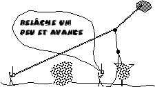
Celui qui tient la bobine du cerf-volant sauveteur voit en général très mal la situation en profondeur, alors que c'est lui qui la commande, soit en relâchant pour faire monter son cerf-volant ou changer l'orientation longitudinale de la force, soit en tractionnant pour tendre sa ligne et donner un à-coup vertical.
D2) La ligne est hors d'atteinte.
La ligne est coupée ou vous avez lâché le dévidoir et il est inaccessible.
A l'aide du cerf-volant d'un copain, essayez de rattraper la ligne au delà du point d'accrochage. Pour cela, il faut un fil pendant avec quelque chose au bout qui puisse s'accrocher dans votre ligne.
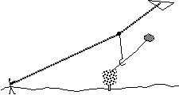
Mais n'oubliez jamais que si ce crochet s'accroche dans quelque chose d'imprévu (cas général, bien prévu par la loi de Murphy), il est impératif de pouvoir récupérer quand même le cerf-volant sauveteur. Donc le fil pendant doit être long, ou beaucoup plus fragile que la ligne.
En cas de succès, vous récupérez votre cerf-volant, c'est le principal, et pour la ligne, faites pour le mieux. En tirant par ce coté, vous pourrez peut-être la récupérer aussi. Ou bien en relâchant, le dévidoir descendra s'il était pendu en hauteur. Au pire vous abandonnerez le morceau inaccessible.
Vous pouvez aussi si c'est le cerf-volant lui-même qui est accroché, essayer de l'agripper soit à l'aide d'un grappin improvisé (par exemple un bâton qui passera dans un trou du cerf-volant, faut bien viser, et de préférence être 2 avec talkie-walkie), soit avec une boucle de fil que vous passerez autour.
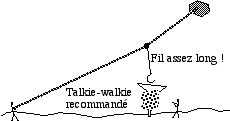
Ensuite, tirez, quitte à casser le cerf-volant, et dans la bonne direction (dans un arbre : à l'opposé du tronc, et dans la direction la plus haute possible, donc du plus loin possible si vous tirez du sol !). Et n'oubliez pas, toujours, de procéder de manière à ne jamais être dans la situation de perdre le cerf-volant sauveteur à son tour.
Au lieu du cerf-volant d'un copain, vous pouvez, si le point d'accrochage n'est pas trop haut, utiliser une perche.
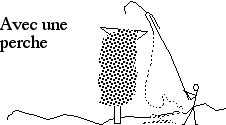
Sylvien a toujours avec lui une perche de 9,50 m (oui, démontable, bien qu'il ait maintenant une énorme voiture) munie de divers accessoires "effecteurs" pour accrocher, repousser, couper, etc. Ces accessoires sont seulement enfilés au bout de la perche et retenus au sol par une ficelle. Ainsi, s'il y a accrochage, on peut toujours récupérer la perche, et tirer sur la ficelle pour faire agir "l'effecteur"... ou le récupérer.
Il est possible aussi de lancer un objet muni d'une ficelle en espérant passer par dessus le cerf-volant.
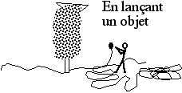
Les chances de succès sont minimes : d'abord c'est difficile de lancer à plus de 7 ou 8 m de haut, surtout avec une ficelle qui doit suivre (je sais ça a l'air biblique, mais essayez...). Ensuite les chances de s'accrocher où on ne voulait pas sont grandes ! Et puis c'est difficile, même une fois passé juste où on veut, d'obtenir ensuite le résultat désiré : si vous lancez un vrai grappin, il s'accrochera dans l'arbre au premier essai. Si vous lancez un caillou, plus facile à récupérer en cas d'insuccès (et moins cher), il ne tirera pas votre cerf-volant. Il est en général préférable de laisser redescendre l'objet, de récupérer ainsi les deux bouts de la ficelle et de tirer le cerf-volant avec, en faisant au besoin un noeud coulant autour du cerf-volant.
(addendum : une bonne solution : Gaby utilise un arc et une flèche pour emmener une ficelle par dessus le cerf-volant (voire au travers...). La flèche redescend bien, même à travers des branches).
E) Vous êtes désespéré !
Vous avez tout essayé, vous n'arrivez à rien : dernier recours, allez voir les organisateurs, dites-leur que vous avez tout essayé et demandez-leur d'actionner l'aide municipale. Les pompiers en général refuseront : ils doivent rester prêts pour des secours plus vitaux, et ils sont maintenant le plus souvent contrôlés par un PC distant (grande agglomération) dont ils ne peuvent shunter les directives.
Par contre les municipalités un peu importantes auront souvent (surtout si le festival est conséquent, avec des banderoles en haut des réverbères) un service d'alerte avec une nacelle hydraulique qui pourra atteindre au moins une dizaine de mètres de haut sans se fatiguer.
(La photo qui suit est destinée à prouver que je ne fais pas de théorie, mais que je me base sur des témoignages malheureusement vécus...)

Il faut seulement trouver l'interlocuteur cervoliste qui saura les motiver parce son organisation a une forte carrure ou parce qu'il connaît le beau-frère de la soeur de la dame qui tient la permanence et à laquelle ils n'osent rien refuser... Et puis vous pourrez (ou l'organisation) leur payer un coup qui les remerciera et les motivera pour la prochaine...
Mais même si vous devez abandonner, ne désespérez pas :
• le Rokkaku de Michel a passé la moitié de l'hiver dans un arbre et est tombé grâce au poids de la neige qui s'est accumulée dessus !
• Un Jessica de Sylvien, coupé au large en vol de nuit sur la mer a été retrouvé après 2 jours par François (qui était resté là le lendemain du festival), posé devant la cabane au bout d'une jetée de pêche au carrelet à 2 km de là.
• Le rokkaku de Dédé est parti sur la mer en traînant sa ligne et a été suivi jusqu'à être trop petit pour être discernable, mais toujours en l'air. Dédé avait déjà, la mort dans l'âme, fait une croix sur son cerf-volant fétiche. Une heure après il était à l'accueil : un bateau de plaisance l'avait récupéré à quelques kilomètres, derrière une île, et ramené dare-dare.
Donc, ne désespérez pas, mais sachez quand même qu'il arrive d'en perdre : j'en ai perdu trois, Christophe un, Daniel un et je sais pas tout.
Alors par pitié, les égoïstes, pas de lignes kevlar qui coupent tout, ou alors allez voler tous seuls !
Maxime.